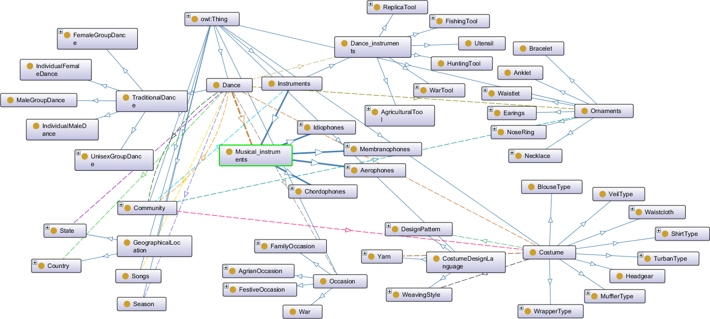

Ontology for the knowledge base of traditional dances
Release 30-07-2020
- Latest version:
- https://dkalita-cu.github.io/OTDspec/
- Authors:
- Deepjyoti Kalita, (Cotton University)
- Dipen Deka, (Gauhati University)
- Download serialization:


- License:

- Cite as:
- Kalita,D; Deka, D (2020) Ontology for Preserving the Knowledge Base of Traditional Dances(OTD), The Electronic Library (Accepted for Publication)
Abstract
This specification describes OTD: Ontology for the Knowledge Base of Traditional Dances in a machine readable format. It uses W3C's RDF technplogy.Table of Contents
Introduction back to ToC
Traditional dances comprise a substantial part of the sociology, lifestyle, economy, festivities of the tribe to which they are associated. Also, as it is a dance, it includes lots of choreographic gestures. Music, musical instruments and dance props are some prevalent entities of traditional dances. The overhaul knowledge base of traditional dances is intangible in nature. The dance itself is not a permanent entity, and it can only be realized and enjoyed during the performance only, unlike stories or novels. Moreover, the preservation part of the cultural bases of ethnic tribes an active motivating scenario for the ontology on traditional dances. The developed ontology should be useful for a student, teacher or researchers to find out the information; it should be useful for a choreographer to find information for recreating the dances; it should be capable enough for a historian or archivist to store the information about traditional dances in a structured approach. So an ontology for traditional dances is thought to be feasible enough as-- Traditional dances being an amalgamation of social customs, cultural rituals, religious beliefs, lifestyle of different communities, an ontology based strucutured schema for its knowledge base shall be much useful. The ontology would streamline the documentation process about the various aspects of dances, facilitating collaborative research, and can work as one stop point for smart information retrieval about any traditional dance.
- Ontology would create a scalable abstract system for the socio-cultural elements associated with traditional dances. This would fecilitate information search at various levels with various use intention. For example a fashion blogger might search for information about traditional dresses asssociated with particular traditional dances of a specific community while a textile expert may wish to know about the detailed pattern of their preparation. Logical knowledge inferencing property would make the knowledge base usable for third party application like lifestyle based e-commerce sites. Again a musician/an archaeologist might looks for information about the instruments used in the dance prformances. This encourages the preservation knowledge base of traditional dances for their multinotional uses.
- Which community have what different traditional dance?
- What are the different types of traditional dances?
- Traditional dances are related to what occasions?
- Different ornaments, dresses, headgears for traditional dances?
- Music, musical instruments, lyrics of traditional dances?
- Information about different tribes?
- The type of clothes different communities wear and how they are prepared?
Namespace declarations
| OTD | <https://dkalita-cu.github.io/OTDspec/> |
| foaf | <http://xmlns.com/foaf/0.1> |
| owl | <http://www.w3.org/2002/07/owl> |
| rdf | <http://www.w3.org/1999/02/22-rdf-syntax-ns> |
| terms | <http://purl.org/dc/terms> |
| xsd | <http://www.w3.org/2001/XMLSchema> |
| rdfs | <http://www.w3.org/2000/01/rdf-schema> |
| default namespace | <https://dkalita-cu.github.io/OTDspec> |
| dc | <http://purl.org/dc/elements/1.1> |
Ontology for the knowledge base of traditional dances: Overview back to ToC
This ontology has the following classes and properties.Classes
- aerophones
- agrian occasion
- agricultural tool
- animal
- animal part
- anklet
- arrow
- bird
- bird part
- blouse type
- bow
- bowl type single sided
- bowl type single sided large
- bracelet
- cannon
- chordophones
- community
- costume
- costume design language
- country
- cultivating
- dance
- dance instruments
- design pattern
- double chorded
- double sided long drum
- double sided short drum
- drummer
- earings
- family occasion
- female group dance
- festive occasion
- fishing tool
- flutist
- gender
- geographical location
- god
- gun
- harvesting
- headgear
- hunting tool
- idiophones
- individual female dance
- individual male dance
- instruments
- male group dance
- materials
- membranophones
- metal
- muffler type
- musical instruments
- musician
- natural yarn
- necklace
- nose ring
- occasion
- ornaments
- perticipants
- plant part
- religious festival
- replica items
- replica tool
- role
- season
- seasonal festival
- shield
- shirt type
- singer
- single chorded
- single sided long drum
- single sided short drum
- soil
- songs
- spear
- state
- super natural entity
- sword
- synthetic yarn
- traditional dance
- triple chorded
- turban type
- unisex group dance
- utensil
- veil type
- waistcloth
- waistlet
- war
- war tool
- weaving style
- wrapper type
- yarn
Object Properties
- associated gender
- associated weaving style
- costume for
- dance instruments for
- has design pattern
- has gender
- has role
- have costume
- have dances
- have instruments
- have ornaments
- is made of
- musical instruments for
- origin country
- origin state
- ornaments for
- performance occasion
- performance season
- prayers offerred to
- related community
- replicates
- required costume
- required dance instruments
- required musical instruments
- required ornaments
- required song
- yarn used
Data Properties
Ontology for the knowledge base of traditional dances: Description back to ToC
The following figure gives a brief overview of the OTD. The figure covers a portion of class which are part of the OTD.
.
Cross reference for Ontology for the knowledge base of traditional dances classes, properties and dataproperties back to ToC
This section provides details for each class and property defined by Ontology for the knowledge base of traditional dances.Classes
- aerophones
- agrian occasion
- agricultural tool
- animal
- animal part
- anklet
- arrow
- bird
- bird part
- blouse type
- bow
- bowl type single sided
- bowl type single sided large
- bracelet
- cannon
- chordophones
- community
- costume
- costume design language
- country
- cultivating
- dance
- dance instruments
- design pattern
- double chorded
- double sided long drum
- double sided short drum
- drummer
- earings
- family occasion
- female group dance
- festive occasion
- fishing tool
- flutist
- gender
- geographical location
- god
- gun
- harvesting
- headgear
- hunting tool
- idiophones
- individual female dance
- individual male dance
- instruments
- male group dance
- materials
- membranophones
- metal
- muffler type
- musical instruments
- musician
- natural yarn
- necklace
- nose ring
- occasion
- ornaments
- perticipants
- plant part
- religious festival
- replica items
- replica tool
- role
- season
- seasonal festival
- shield
- shirt type
- singer
- single chorded
- single sided long drum
- single sided short drum
- soil
- songs
- spear
- state
- super natural entity
- sword
- synthetic yarn
- traditional dance
- triple chorded
- turban type
- unisex group dance
- utensil
- veil type
- waistcloth
- waistlet
- war
- war tool
- weaving style
- wrapper type
- yarn
aerophonesc back to ToC or Class ToC
IRI: https://dkalita-cu.github.io/OTDspec/#Aerophones
- has super-classes
- musical instruments c
- has members
- kara ni, muk brangsi ni, singa ni
agrian occasionc back to ToC or Class ToC
IRI: https://dkalita-cu.github.io/OTDspec/#AgrianOccasion
- has super-classes
- occasion c
- has sub-classes
- cultivating c, harvesting c
- is disjoint with
- family occasion c, festive occasion c
agricultural toolc back to ToC or Class ToC
IRI: https://dkalita-cu.github.io/OTDspec/#AgriculturalTool
- has super-classes
- dance instruments c
- has members
- da ni, kodal ni, kuthar ni, lunkhi ni
animalc back to ToC or Class ToC
IRI: https://dkalita-cu.github.io/OTDspec/#Animal
- has super-classes
- replica items c
animal partc back to ToC or Class ToC
IRI: https://dkalita-cu.github.io/OTDspec/#AnimalPart
- has super-classes
- materials c
- has members
- buffalo horn ni, ivory ni
- is disjoint with
- bird part c, plant part c, soil c
ankletc back to ToC or Class ToC
IRI: https://dkalita-cu.github.io/OTDspec/#Anklet
arrowc back to ToC or Class ToC
IRI: https://dkalita-cu.github.io/OTDspec/#Arrow
- has super-classes
- war tool c
birdc back to ToC or Class ToC
IRI: https://dkalita-cu.github.io/OTDspec/#Bird
- has super-classes
- replica items c
- has members
- bird maslenka ni
bird partc back to ToC or Class ToC
IRI: https://dkalita-cu.github.io/OTDspec/#BirdPart
- has super-classes
- materials c
- is disjoint with
- animal part c, plant part c, soil c
blouse typec back to ToC or Class ToC
IRI: https://dkalita-cu.github.io/OTDspec/#BlouseType
- has super-classes
- costume c
bowc back to ToC or Class ToC
IRI: https://dkalita-cu.github.io/OTDspec/#Bow
- has super-classes
- war tool c
bowl type single sidedc back to ToC or Class ToC
IRI: https://dkalita-cu.github.io/OTDspec/#BowlTypeSingleSided
- has super-classes
- membranophones c
bowl type single sided largec back to ToC or Class ToC
IRI: https://dkalita-cu.github.io/OTDspec/#BowlTypeSingleSidedLarge
- has super-classes
- membranophones c
braceletc back to ToC or Class ToC
IRI: https://dkalita-cu.github.io/OTDspec/#Bracelet
cannonc back to ToC or Class ToC
IRI: https://dkalita-cu.github.io/OTDspec/#Cannon
- has super-classes
- war tool c
chordophonesc back to ToC or Class ToC
IRI: https://dkalita-cu.github.io/OTDspec/#Chordophones
- has super-classes
- musical instruments c
- has sub-classes
- double chorded c, single chorded c, triple chorded c
communityc back to ToC or Class ToC
IRI: https://dkalita-cu.github.io/OTDspec/#Community
- is in domain of
- have costume op, have dances op, have instruments op, have ornaments op
- is in range of
- related community op
- has members
- rabha ni
costumec back to ToC or Class ToC
IRI: https://dkalita-cu.github.io/OTDspec/#Costume
- has sub-classes
- blouse type c, headgear c, muffler type c, shirt type c, turban type c, veil type c, waistcloth c, wrapper type c
- is in domain of
- associated weaving style op, has design pattern op, yarn used op
- is in range of
- have costume op, required costume op
costume design languagec back to ToC or Class ToC
IRI: https://dkalita-cu.github.io/OTDspec/#CostumeDesignLanguage
- has sub-classes
- design pattern c, weaving style c, yarn c
countryc back to ToC or Class ToC
IRI: https://dkalita-cu.github.io/OTDspec/#Country
- has super-classes
- geographical location c
- is in range of
- origin country op
- has members
- india ni
cultivatingc back to ToC or Class ToC
IRI: https://dkalita-cu.github.io/OTDspec/#Cultivating
- has super-classes
- agrian occasion c
- has members
- hamjha festival ni
dancec back to ToC or Class ToC
IRI: https://dkalita-cu.github.io/OTDspec/#Dance
- has sub-classes
- traditional dance c
- is in domain of
- origin country op, origin state op, performance occasion op, performance season op, related community op, required costume op, required dance instruments op, required musical instruments op, required ornaments op, required song op
- is in range of
- have dances op
dance instrumentsc back to ToC or Class ToC
IRI: https://dkalita-cu.github.io/OTDspec/#Dance_instruments
- has super-classes
- instruments c
- has sub-classes
- agricultural tool c, fishing tool c, hunting tool c, replica tool c, utensil c, war tool c
- is in domain of
- generic usage dp
- is in range of
- required dance instruments op
- is disjoint with
- musical instruments c
design patternc back to ToC or Class ToC
IRI: https://dkalita-cu.github.io/OTDspec/#DesignPattern
- has super-classes
- costume design language c
- is in range of
- has design pattern op
- has members
- checked ni, floral ni
double chordedc back to ToC or Class ToC
IRI: https://dkalita-cu.github.io/OTDspec/#DoubleChorded
- has super-classes
- chordophones c
double sided long drumc back to ToC or Class ToC
IRI: https://dkalita-cu.github.io/OTDspec/#DoubleSidedLongDrum
- has super-classes
- membranophones c
- has members
- kham ni, tarsa ni
double sided short drumc back to ToC or Class ToC
IRI: https://dkalita-cu.github.io/OTDspec/#DoubleSidedShortDrum
- has super-classes
- membranophones c
drummerc back to ToC or Class ToC
IRI: https://dkalita-cu.github.io/OTDspec/#Drummer
- has super-classes
- musician c
earingsc back to ToC or Class ToC
IRI: https://dkalita-cu.github.io/OTDspec/#Earings
family occasionc back to ToC or Class ToC
IRI: https://dkalita-cu.github.io/OTDspec/#FamilyOccasion
- has super-classes
- occasion c
- has members
- childbirth ni, funeral ni, marriage ni
- is disjoint with
- agrian occasion c, festive occasion c
female group dancec back to ToC or Class ToC
IRI: https://dkalita-cu.github.io/OTDspec/#FemaleGroupDance
- has super-classes
- traditional dance c
- has members
- bohurongi ni
festive occasionc back to ToC or Class ToC
IRI: https://dkalita-cu.github.io/OTDspec/#FestiveOccasion
- has super-classes
- occasion c
- has sub-classes
- religious festival c, seasonal festival c
- is disjoint with
- agrian occasion c, family occasion c
fishing toolc back to ToC or Class ToC
IRI: https://dkalita-cu.github.io/OTDspec/#FishingTool
- has super-classes
- dance instruments c
- has members
- jakoi ni
flutistc back to ToC or Class ToC
IRI: https://dkalita-cu.github.io/OTDspec/#Flutist
- has super-classes
- musician c
genderc back to ToC or Class ToC
IRI: https://dkalita-cu.github.io/OTDspec/#Gender
- is in range of
- associated gender op, has gender op
- has members
- female ni, male ni, unisex ni
geographical locationc back to ToC or Class ToC
IRI: https://dkalita-cu.github.io/OTDspec/#GeographicalLocation
godc back to ToC or Class ToC
IRI: https://dkalita-cu.github.io/OTDspec/#God
- is in range of
- prayers offerred to op
gunc back to ToC or Class ToC
IRI: https://dkalita-cu.github.io/OTDspec/#Gun
- has super-classes
- war tool c
harvestingc back to ToC or Class ToC
IRI: https://dkalita-cu.github.io/OTDspec/#Harvesting
- has super-classes
- agrian occasion c
headgearc back to ToC or Class ToC
IRI: https://dkalita-cu.github.io/OTDspec/#Headgear
- has super-classes
- costume c
hunting toolc back to ToC or Class ToC
IRI: https://dkalita-cu.github.io/OTDspec/#HuntingTool
- has super-classes
- dance instruments c
idiophonesc back to ToC or Class ToC
IRI: https://dkalita-cu.github.io/OTDspec/#Idiophones
- has super-classes
- musical instruments c
- has members
- daidi ni, tal ni, thorka ni
individual female dancec back to ToC or Class ToC
IRI: https://dkalita-cu.github.io/OTDspec/#IndividualFemaleDance
- has super-classes
- traditional dance c
individual male dancec back to ToC or Class ToC
IRI: https://dkalita-cu.github.io/OTDspec/#IndividualMaleDance
- has super-classes
- traditional dance c
instrumentsc back to ToC or Class ToC
IRI: https://dkalita-cu.github.io/OTDspec/#Instruments
- has sub-classes
- dance instruments c, musical instruments c
- is in range of
- have instruments op
male group dancec back to ToC or Class ToC
IRI: https://dkalita-cu.github.io/OTDspec/#MaleGroupDance
- has super-classes
- traditional dance c
materialsc back to ToC or Class ToC
IRI: https://dkalita-cu.github.io/OTDspec/#Materials
- has sub-classes
- animal part c, bird part c, metal c, plant part c, soil c
- is in range of
- is made of op
membranophonesc back to ToC or Class ToC
IRI: https://dkalita-cu.github.io/OTDspec/#Membranophones
- has super-classes
- musical instruments c
- has sub-classes
- bowl type single sided c, bowl type single sided large c, double sided long drum c, double sided short drum c, single sided long drum c, single sided short drum c
metalc back to ToC or Class ToC
IRI: https://dkalita-cu.github.io/OTDspec/#Metal
muffler typec back to ToC or Class ToC
IRI: https://dkalita-cu.github.io/OTDspec/#MufflerType
musical instrumentsc back to ToC or Class ToC
IRI: https://dkalita-cu.github.io/OTDspec/#Musical_instruments
- has super-classes
- instruments c
- has sub-classes
- aerophones c, chordophones c, idiophones c, membranophones c
- is in range of
- required musical instruments op
- is disjoint with
- dance instruments c
musicianc back to ToC or Class ToC
IRI: https://dkalita-cu.github.io/OTDspec/#Musician
natural yarnc back to ToC or Class ToC
IRI: https://dkalita-cu.github.io/OTDspec/#NaturalYarn
- has super-classes
- yarn c
necklacec back to ToC or Class ToC
IRI: https://dkalita-cu.github.io/OTDspec/#Necklace
nose ringc back to ToC or Class ToC
IRI: https://dkalita-cu.github.io/OTDspec/#NoseRing
occasionc back to ToC or Class ToC
IRI: https://dkalita-cu.github.io/OTDspec/#Occasion
- has sub-classes
- agrian occasion c, family occasion c, festive occasion c, war c
- is in range of
- performance occasion op
ornamentsc back to ToC or Class ToC
IRI: https://dkalita-cu.github.io/OTDspec/#Ornaments
- has sub-classes
- anklet c, bracelet c, earings c, necklace c, nose ring c, waistlet c
- is in range of
- have ornaments op, required ornaments op
perticipantsc back to ToC or Class ToC
IRI: https://dkalita-cu.github.io/OTDspec/#Perticipants
- has super-classes
- person c
plant partc back to ToC or Class ToC
IRI: https://dkalita-cu.github.io/OTDspec/#PlantPart
- has super-classes
- materials c
- has members
- bamboo ni, gomari wood ni, nal bamboo ni, wood ni
- is disjoint with
- animal part c, bird part c, soil c
religious festivalc back to ToC or Class ToC
IRI: https://dkalita-cu.github.io/OTDspec/#ReligiousFestival
- has super-classes
- festive occasion c
- has members
- religious social gatherings ni
- is disjoint with
- seasonal festival c
replica itemsc back to ToC or Class ToC
IRI: https://dkalita-cu.github.io/OTDspec/#ReplicaItems
- has sub-classes
- animal c, bird c, super natural entity c
- is in range of
- replicates op
replica toolc back to ToC or Class ToC
IRI: https://dkalita-cu.github.io/OTDspec/#ReplicaTool
- has super-classes
- dance instruments c
- is in domain of
- replicates op
- has members
- maslenka ni
rolec back to ToC or Class ToC
IRI: https://dkalita-cu.github.io/OTDspec/#Role
seasonc back to ToC or Class ToC
IRI: https://dkalita-cu.github.io/OTDspec/#Season
- is in range of
- performance season op
seasonal festivalc back to ToC or Class ToC
IRI: https://dkalita-cu.github.io/OTDspec/#SeasonalFestival
- has super-classes
- festive occasion c
- is disjoint with
- religious festival c
shieldc back to ToC or Class ToC
IRI: https://dkalita-cu.github.io/OTDspec/#Shield
- has super-classes
- war tool c
- has members
- khuchung khapak ni
shirt typec back to ToC or Class ToC
IRI: https://dkalita-cu.github.io/OTDspec/#ShirtType
singerc back to ToC or Class ToC
IRI: https://dkalita-cu.github.io/OTDspec/#Singer
- has super-classes
- role c
single chordedc back to ToC or Class ToC
IRI: https://dkalita-cu.github.io/OTDspec/#SingleChorded
- has super-classes
- chordophones c
- has members
- gamana ni
single sided long drumc back to ToC or Class ToC
IRI: https://dkalita-cu.github.io/OTDspec/#SingleSidedLongDrum
- has super-classes
- membranophones c
single sided short drumc back to ToC or Class ToC
IRI: https://dkalita-cu.github.io/OTDspec/#SingleSidedShortDrum
- has super-classes
- membranophones c
soilc back to ToC or Class ToC
IRI: https://dkalita-cu.github.io/OTDspec/#Soil
- has super-classes
- materials c
- is disjoint with
- animal part c, bird part c, metal c, plant part c
songsc back to ToC or Class ToC
IRI: https://dkalita-cu.github.io/OTDspec/#Songs
- is in domain of
- has lyrics dp, mukhda ofthe song dp
- is in range of
- required song op
spearc back to ToC or Class ToC
IRI: https://dkalita-cu.github.io/OTDspec/#Spear
- has super-classes
- war tool c
statec back to ToC or Class ToC
IRI: https://dkalita-cu.github.io/OTDspec/#State
- has super-classes
- geographical location c
- is in range of
- origin state op
- has members
- assam ni
super natural entityc back to ToC or Class ToC
IRI: https://dkalita-cu.github.io/OTDspec/#SuperNaturalEntity
- has super-classes
- replica items c
synthetic yarnc back to ToC or Class ToC
IRI: https://dkalita-cu.github.io/OTDspec/#SyntheticYarn
- has super-classes
- yarn c
traditional dancec back to ToC or Class ToC
IRI: https://dkalita-cu.github.io/OTDspec/#TraditionalDance
- has super-classes
- dance c
- has sub-classes
- female group dance c, individual female dance c, individual male dance c, male group dance c, unisex group dance c
triple chordedc back to ToC or Class ToC
IRI: https://dkalita-cu.github.io/OTDspec/#TripleChorded
- has super-classes
- chordophones c
- has members
- badung duppa ni
turban typec back to ToC or Class ToC
IRI: https://dkalita-cu.github.io/OTDspec/#TurbanType
unisex group dancec back to ToC or Class ToC
IRI: https://dkalita-cu.github.io/OTDspec/#UnisexGroupDance
- has super-classes
- traditional dance c
- has members
- abahoni ni, fakranti ni, hamjhar ni
utensilc back to ToC or Class ToC
IRI: https://dkalita-cu.github.io/OTDspec/#Utensil
- has super-classes
- dance instruments c
veil typec back to ToC or Class ToC
IRI: https://dkalita-cu.github.io/OTDspec/#VeilType
- has super-classes
- costume c
waistclothc back to ToC or Class ToC
IRI: https://dkalita-cu.github.io/OTDspec/#Waistcloth
waistletc back to ToC or Class ToC
IRI: https://dkalita-cu.github.io/OTDspec/#Waistlet
- has super-classes
- ornaments c
- has members
- rubak mala ni
warc back to ToC or Class ToC
IRI: https://dkalita-cu.github.io/OTDspec/#War
- has super-classes
- occasion c
war toolc back to ToC or Class ToC
IRI: https://dkalita-cu.github.io/OTDspec/#WarTool
weaving stylec back to ToC or Class ToC
IRI: https://dkalita-cu.github.io/OTDspec/#WeavingStyle
- has super-classes
- costume design language c
- is in range of
- associated weaving style op
- has members
- plain weaving ni
wrapper typec back to ToC or Class ToC
IRI: https://dkalita-cu.github.io/OTDspec/#WrapperType
yarnc back to ToC or Class ToC
IRI: https://dkalita-cu.github.io/OTDspec/#Yarn
- has super-classes
- costume design language c
- has sub-classes
- natural yarn c, synthetic yarn c
- is in range of
- yarn used op
Object Properties
- associated gender
- associated weaving style
- costume for
- dance instruments for
- has design pattern
- has gender
- has role
- have costume
- have dances
- have instruments
- have ornaments
- is made of
- musical instruments for
- origin country
- origin state
- ornaments for
- performance occasion
- performance season
- prayers offerred to
- related community
- replicates
- required costume
- required dance instruments
- required musical instruments
- required ornaments
- required song
- yarn used
associated genderop back to ToC or Object Property ToC
IRI: https://dkalita-cu.github.io/OTDspec/#associatedGender
- has super-properties
- top object property
- has domain
- costume c or dance instruments c or musical instruments c or ornaments c
- has range
- gender c
associated weaving styleop back to ToC or Object Property ToC
IRI: https://dkalita-cu.github.io/OTDspec/#associatedWeavingStyle
- has domain
- costume c
- has range
- weaving style c
costume forop back to ToC or Object Property ToC
IRI: https://dkalita-cu.github.io/OTDspec/#costumeFor
- is inverse of
- required costume op
dance instruments forop back to ToC or Object Property ToC
IRI: https://dkalita-cu.github.io/OTDspec/#danceInstrumentsFor
- is inverse of
- required dance instruments op
has design patternop back to ToC or Object Property ToC
IRI: https://dkalita-cu.github.io/OTDspec/#hasDesignPattern
- has domain
- costume c
- has range
- design pattern c
- is inverse of
- is design pattern for op
has genderop back to ToC or Object Property ToC
IRI: https://dkalita-cu.github.io/OTDspec/#hasGender
has characteristics: functional
- has domain
- person c
- has range
- gender c
has roleop back to ToC or Object Property ToC
IRI: https://dkalita-cu.github.io/OTDspec/#hasRole
- has domain
- person c
- has range
- role c
have costumeop back to ToC or Object Property ToC
IRI: https://dkalita-cu.github.io/OTDspec/#haveCostume
have dancesop back to ToC or Object Property ToC
IRI: https://dkalita-cu.github.io/OTDspec/#haveDances
have instrumentsop back to ToC or Object Property ToC
IRI: https://dkalita-cu.github.io/OTDspec/#haveInstruments
- has domain
- community c
- has range
- instruments c
have ornamentsop back to ToC or Object Property ToC
IRI: https://dkalita-cu.github.io/OTDspec/#haveOrnaments
is made ofop back to ToC or Object Property ToC
IRI: https://dkalita-cu.github.io/OTDspec/#isMadeOf
- has domain
- instruments c or ornaments c
- has range
- materials c
- is inverse of
- is used to make op
musical instruments forop back to ToC or Object Property ToC
IRI: https://dkalita-cu.github.io/OTDspec/#musicalInstrumentsFor
- is inverse of
- required musical instruments op
origin countryop back to ToC or Object Property ToC
IRI: https://dkalita-cu.github.io/OTDspec/#originCountry
origin stateop back to ToC or Object Property ToC
IRI: https://dkalita-cu.github.io/OTDspec/#originState
ornaments forop back to ToC or Object Property ToC
IRI: https://dkalita-cu.github.io/OTDspec/#ornamentsFor
- is inverse of
- required ornaments op
performance occasionop back to ToC or Object Property ToC
IRI: https://dkalita-cu.github.io/OTDspec/#performanceOccasion
performance seasonop back to ToC or Object Property ToC
IRI: https://dkalita-cu.github.io/OTDspec/#performanceSeason
prayers offerred toop back to ToC or Object Property ToC
IRI: https://dkalita-cu.github.io/OTDspec/#prayersOfferredTo
- has domain
- has range
- god c
replicatesop back to ToC or Object Property ToC
IRI: https://dkalita-cu.github.io/OTDspec/#replicates
- has domain
- replica tool c
- has range
- replica items c
required costumeop back to ToC or Object Property ToC
IRI: https://dkalita-cu.github.io/OTDspec/#requiredCostume
- has domain
- dance c
- has range
- costume c
- is inverse of
- costume for op
required dance instrumentsop back to ToC or Object Property ToC
IRI: https://dkalita-cu.github.io/OTDspec/#requiredDanceInstruments
- has domain
- dance c
- has range
- dance instruments c
- is inverse of
- dance instruments for op
required musical instrumentsop back to ToC or Object Property ToC
IRI: https://dkalita-cu.github.io/OTDspec/#requiredMusicalInstruments
- has domain
- dance c
- has range
- musical instruments c
- is inverse of
- musical instruments for op
required ornamentsop back to ToC or Object Property ToC
IRI: https://dkalita-cu.github.io/OTDspec/#requiredOrnaments
- has domain
- dance c
- has range
- ornaments c
- is inverse of
- ornaments for op
required songop back to ToC or Object Property ToC
IRI: https://dkalita-cu.github.io/OTDspec/#requiredSong
yarn usedop back to ToC or Object Property ToC
IRI: https://dkalita-cu.github.io/OTDspec/#yarnUsed
Data Properties
- breadth
- diameter
- generic usage
- has colour
- has lyrics
- has name
- has representation as
- has size
- length
- mukhda ofthe song
- worn at
breadthdp back to ToC or Data Property ToC
IRI: https://dkalita-cu.github.io/OTDspec/#breadth
- has super-properties
- has size dp
diameterdp back to ToC or Data Property ToC
IRI: https://dkalita-cu.github.io/OTDspec/#diameter
- has super-properties
- has size dp
generic usagedp back to ToC or Data Property ToC
IRI: https://dkalita-cu.github.io/OTDspec/#genericUsage
- has domain
- dance instruments c
- has range
- string
has colourdp back to ToC or Data Property ToC
IRI: https://dkalita-cu.github.io/OTDspec/#hasColour
has lyricsdp back to ToC or Data Property ToC
IRI: https://dkalita-cu.github.io/OTDspec/#hasLyrics
- has domain
- songs c
- has range
- string
has namedp back to ToC or Data Property ToC
IRI: https://dkalita-cu.github.io/OTDspec/#hasName
- has domain
- person c
- has range
- string
has representation asdp back to ToC or Data Property ToC
IRI: https://dkalita-cu.github.io/OTDspec/#hasRepresentationAs
- has range
- any u r i
has sizedp back to ToC or Data Property ToC
IRI: https://dkalita-cu.github.io/OTDspec/#hasSize
- has super-properties
- top data property
- has sub-properties
- breadth dp, diameter dp, length dp
- has domain
- costume c or instruments c
- has range
- literal
lengthdp back to ToC or Data Property ToC
IRI: https://dkalita-cu.github.io/OTDspec/#length
- has super-properties
- has size dp
mukhda ofthe songdp back to ToC or Data Property ToC
IRI: https://dkalita-cu.github.io/OTDspec/#mukhdaOftheSong
- has domain
- songs c
- has range
- string
worn atdp back to ToC or Data Property ToC
IRI: https://dkalita-cu.github.io/OTDspec/#wornAt
Legend back to ToC
op: Object Properties
dp: Data Properties
ni: Named Individuals
References back to ToC
- RDF. (2014). RDF 1.1 Concepts and Abstract Syntax. http://www.w3.org/TR/rdf11concepts/
- OWL 2 Web Ontology Language: Document Overview (Second Edition). W3C Recommendation 11 December 2012. https://www.w3.org/TR/owl2-overview/
- SWRL: A Semantic Web Rule Language: Combining OWL and RuleML. W3C Member Submission 21 May 2004. https://www.w3.org/Submission/SWRL/
- Kalita, D. & Deka, D. (2020) Searching the great metadata timeline: A review of library metadata standards from linear cataloguing rules to ontology inspired metadata standards, Library Hi Tech, Vol. ahead-of-print No. ahead-of-print, https://doi.org/10.1108/LHT-08-2019-0168 .
Acknowledgements back to ToC
One of the authors, D Kalita offers his sincere thanks Dr Gowtham R for giving the basic knowledge of ontology development and introducing to the enormous possibilities of semantic web. The authors would like to thank Silvio Peroni for developing LODE, a Live OWL Documentation Environment, which is used for representing the Cross Referencing Section of this document and Daniel Garijo for developing Widoco, the program used to create the template used in this documentation.